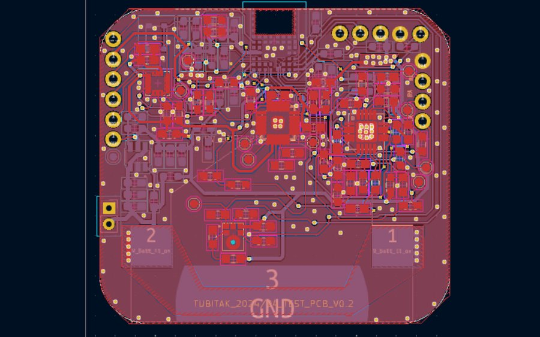

Prototype · 2023
Smart Sportswear — BLE ECG & Motion Sensor Node
A wearable prototype that measures heart activity and movement through sensors integrated into a shirt, then sends the readings wirelessly to a phone.

My graduation thesis: sportswear with the electronics knitted in. Instead of gel pads and wires, the ECG electrodes are conductive yarn worked into a t-shirt, so the sensors sit against the body without restricting how the athlete moves. The goal was a garment that stays light and comfortable while continuously reporting heart activity, motion and breathing.
The heart of it is an ON Semiconductor RSL10 — an ultra-low-power ARM Cortex-M3 with an integrated BLE radio, chosen so the whole thing runs off a coin cell without an external DC/DC converter. An AD8232 analog front-end conditions the faint ECG signal picked up by the conductive-yarn electrodes; an MPU-6050 IMU (read over I2C) provides 3-axis motion; and an ICS-43434 MEMS microphone captures breath sounds over I2S for respiration-rate work.
On the firmware side I wrote the application layer on top of ON Semi's RSL10 CMSIS-Pack: ADC sampling of the ECG on DIO2 with moving-average filtering, IMU communication and the main loop, and two custom 128-bit GATT services that carry the sensor data as BLE Notify characteristics. ECG samples use 32-bit IEEE-11073-style encoding; accelerometer axes go out as scaled ASCII. The underlying BLE stack, FOTA infrastructure and pairing implementation are vendor-provided components; my contribution was the sensor application firmware.
The custom PCB was designed in KiCad and kept deliberately tiny for ergonomics, with hole pads so the conductive yarns from the AD8232 could be heat-fixed to the fabric. Bringing it up surfaced a real hardware bug: the RSL10 inputs only tolerate ~2.2 V, so the AD8232 output needed a voltage divider that the first board lacked — I patched the first revision by scraping the board and soldering SMD resistors, then respun a cleaner second PCB with rounded corners, proper programming-header placement and a spot for the MEMS mic.
To make sense of the data off the device, I wrote a standalone C tool that parses nRF Connect BLE logs, demultiplexes the payload by characteristic UUID, decodes both wire formats (ASCII and IEEE-11073), and writes timestamped CSVs per signal. A MATLAB script then runs findpeaks() on per-activity ECG (rest / walking / squat) for R-wave detection and heart-rate estimation, and a 200–800 Hz Butterworth + envelope + peak-detection pipeline turned the mic recording into a respiration rate — about 14 breaths per minute in testing.
Highlights
- ECG measured through conductive-yarn electrodes knitted into the shirt — no gel pads or skin-side wires
- RSL10 (Cortex-M3 + BLE) firmware streaming ECG + 3-axis motion to a phone as GATT Notify characteristics
- ECG samples use 32-bit IEEE-11073-style encoding; accelerometer axes use scaled ASCII
- Application firmware for ECG sampling, MPU-6050 acquisition over I2C and BLE GATT notifications
- Custom KiCad PCB, coin-cell powered; found and fixed a missing AD8232 voltage divider against the RSL10's 2.2 V input limit
- Host-side C log-decoder and MATLAB analysis: R-peak heart-rate detection and about 14 breaths/minute respiration rate from a MEMS mic
Tools and technologies
Want to discuss this work?
Get in touch, or read more about my engineering experience.